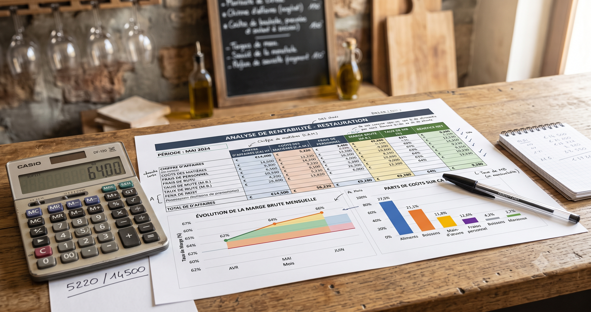

Marge brute en restauration 2026 : calcul, taux de marque et leviers d’optimisation
Marge brute, taux de marque, taux de marge, marge nette, EBE : ces termes sont constamment confondus, y compris par des restaurateurs expérimentés. Pourtant, savoir exactement ce que mesure votre marge brute — et surtout ce qu’elle ne mesure pas — est la base de toute décision de pricing ou de gestion. Ce guide détaille les formules, les benchmarks par type d’établissement, la marge sur les boissons, et les leviers concrets pour l’améliorer sans dégrader la qualité.
Marge brute, taux de marque, taux de marge : ne plus confondre
C’est la confusion la plus fréquente en gestion de restauration, et elle a des conséquences bien réelles sur le pricing. Voici les cinq notions à distinguer clairement :
- Marge brute (en €) : CA HT moins le coût des matières premières consommées. C’est un montant, pas un pourcentage.
- Taux de marque (en %) : la marge brute rapportée au prix de vente (CA). C’est l’indicateur le plus utilisé en restauration, car il se lit directement sur le chiffre d’affaires.
- Taux de marge (en %) : la marge brute rapportée au coût d’achat. Utilisé en négoce, souvent confondu à tort avec le taux de marque — alors que les deux donnent des résultats très différents.
- Marge nette (en %) : le résultat net rapporté au CA, après toutes les charges (matières, personnel, loyer, énergie, amortissements, impôts).
- EBE (excédent brut d’exploitation) : CA HT moins achats consommés, charges externes, charges de personnel et impôts et taxes, plus les subventions éventuelles. Il mesure la rentabilité opérationnelle avant amortissements et intérêts — proche du résultat net sans en être l’équivalent exact.
Les formules de calcul, avec exemples chiffrés
Marge brute par plat
Exemple : un plat vendu 15 € HT dont les ingrédients coûtent 4,50 € dégage une marge brute de 10,50 €.
Taux de marque (l’indicateur à retenir)
Pour le même plat : 10,50 ÷ 15 × 100 = 70 %. Autrement dit, sur chaque euro encaissé, 70 centimes restent après achat des matières premières.
Taux de marge (à ne pas confondre)
Toujours le même plat : 10,50 ÷ 4,50 × 100 ≈ 233 %. C’est un chiffre juste, mais qui ne mesure pas la même chose que le taux de marque — il est rarement utilisé en restauration.
| Indicateur | Base de calcul | Valeur (exemple ci-dessus) |
|---|---|---|
| Marge brute | Prix de vente − coût | 10,50 € |
| Taux de marque | Marge brute ÷ prix de vente | 70 % |
| Taux de marge | Marge brute ÷ coût d’achat | 233 % |
Relation utile à retenir : food cost (%) + taux de marque (%) = 100 %. Si votre food cost est de 30 %, votre taux de marque est mécaniquement de 70 %. Pour le détail du calcul du food cost plat par plat, consultez notre guide complet du food cost.
Marge brute globale (sur une période)
Au niveau de l’établissement, remplacez le coût d’un plat par la consommation matière totale, calculée via l’inventaire :
Quel taux de marge brute viser selon votre établissement ?
Il n’existe pas de statistique officielle publiée par l’INSEE, l’UMIH ou la Banque de France donnant un taux de marque cible par type d’établissement. Les fourchettes ci-dessous sont des ordres de grandeur de terrain, issus de cabinets comptables spécialisés CHR et d’éditeurs de logiciels de gestion — à utiliser comme repères, pas comme normes chiffrées.
| Type d’établissement | Food cost (coût matière / CA) | Taux de marque (marge brute) |
|---|---|---|
| Restaurant traditionnel | 25–35 % | 65–75 % |
| Brasserie | 25–32 % | 68–75 % |
| Gastronomique | 30–40 % | 60–70 % |
| Pizzeria | 20–28 % | 72–80 % |
| Fast-food / restauration rapide | 20–30 % | 70–80 % |
| Bar (boissons) | 15–25 % | 75–95 % |
Ordres de grandeur secteur (cabinets CHR, éditeurs de logiciels de gestion), pas des statistiques officielles. Le prime cost (food cost + masse salariale) reste l’indicateur composite le plus fiable pour juger de la santé financière réelle — objectif : rester sous 60 % du CA, seuil d’alerte à 65 %.
Pour situer votre établissement par rapport à la concurrence locale, croisez ce taux de marque avec l’ensemble de vos ratios de rentabilité — masse salariale, loyer, résultat net — plutôt que de le regarder isolément.

La répartition du CA : la « règle des tiers » nuancée
Cette règle circule beaucoup dans le secteur, mais elle mérite d’être précisée : ce n’est pas un partage strict en trois tiers égaux, mais une répartition typique observée par les cabinets comptables spécialisés CHR :
| Poste de charge | Part du CA HT |
|---|---|
| Matières premières (food cost) | 25–35 % |
| Masse salariale (charges patronales incluses) | 30–38 % |
| Loyer et charges locatives | 8–10 % |
| Énergie | 5–8 % |
| Autres charges (assurances, taxes, frais généraux) | 5–8 % |
| Marge nette résiduelle | 5–10 % |
Simplification pédagogique issue de la pratique des cabinets CHR (Compta Resto, W-Restaurant, Malou), pas une norme comptable officielle. Au-delà de 10 % de loyer, le modèle économique est jugé structurellement fragile.
Marge brute sur les boissons : un levier sous-exploité
C’est un angle que beaucoup de restaurateurs négligent : la marge sur les boissons est structurellement bien supérieure à celle sur la nourriture solide.
| Catégorie | Taux de marque (marge brute) |
|---|---|
| Spiritueux | 83–94 % |
| Bière pression | 80–87 % |
| Softs | 83–93 % |
| Nourriture solide (moyenne) | 70–75 % |
Concrètement, une pinte de bière dont le coût matière est de 0,80 à 1,20 € se vend généralement autour de 6 € ; un soft dont le coût est de 0,20 à 0,50 € se vend autour de 3 €. C’est pourquoi une offre de restauration légère (planches, tapas) associée à une carte de boissons travaillée peut augmenter le panier moyen de 30 à 50 % tout en tirant la marge brute globale vers le haut — la boisson « subventionne » la cuisine.
Entrez vos ingrédients et vos prix de vente : obtenez votre taux de marque, votre food cost et votre marge brute par plat en moins de 2 minutes.
Calculateur gratuit →Marge brute vs rentabilité réelle : pourquoi 70 % ne suffit pas
Une bonne marge brute ne garantit rien si la masse salariale ou les charges fixes absorbent l’écart. C’est précisément le rôle du prime cost et de l’EBE de révéler ce que la marge brute seule ne montre pas.
Un restaurant peut afficher 70 % de taux de marque et être déficitaire si masse salariale et loyer dépassent 60 à 65 % du CA cumulés avec le food cost. Selon l’Observatoire Fiducial, une donnée largement reprise dans la presse professionnelle CHR (à considérer comme un chiffre repris par la presse sectorielle plutôt que vérifié à la source primaire), le résultat net moyen d’un restaurant serait passé de 11 % du CA en 2023 à environ 3 % en 2024 — un effondrement attribué à la hausse simultanée des matières premières et des salaires, non intégralement répercutée sur les prix de vente.
En parallèle, au niveau macro-sectoriel, Cerfrance indique que la part de l’EBE dans le CA du secteur restauration est passée de 10,8 % à 11,3 % en 2024, portée par une forte hausse du CA agrégé (+12 %). Ce chiffre moyen sectoriel n’est pas contradictoire avec la baisse du résultat net individuel citée par Fiducial : il illustre simplement l’écart entre une moyenne agrégée sur l’ensemble du secteur et la situation d’un établissement type.
5 leviers concrets pour améliorer votre marge brute
1. Des fiches techniques précises
Le levier le plus fondamental : sans grammages standardisés par plat, impossible de connaître votre marge réelle ni de la piloter. Voir notre guide des fiches techniques et notre générateur gratuit.
2. La négociation fournisseurs
Comparer au moins 2 à 3 devis par famille de produits chaque année, grouper les commandes pour obtenir des remises volume (5 à 15 % observés en pratique), et négocier des délais de paiement de 45 à 60 jours pour améliorer la trésorerie sans toucher au prix.
3. La réduction des pertes en cuisine
Selon l’ADEME, le gaspillage alimentaire moyen en restauration est estimé à 74 g par client en cuisine d’assemblage et jusqu’à 229 g par client en cuisine traditionnelle — avec environ 80 % du gaspillage généré en cuisine, avant même le service. Une gestion rigoureuse des stocks en FIFO réduit mécaniquement ce poste. Voir notre guide de gestion des stocks.
4. Un pricing aligné sur la valeur perçue
Un coefficient multiplicateur uniforme sur toute la carte est une erreur fréquente. Le prix doit tenir compte de la valeur perçue par le client autant que du coût de revient. Détail complet dans notre guide pour fixer le prix de vente de vos plats.
5. Le menu engineering
Classez chaque plat selon deux axes — popularité et marge — pour identifier quatre catégories : les étoiles (populaires et rentables, à mettre en avant), les énigmes (rentables mais peu vendues, à promouvoir), les chevaux de trait (populaires mais peu rentables, à retravailler) et les poids morts (ni populaires ni rentables, à retirer). Cette méthode, largement adoptée dans le secteur, permet de réorienter la carte vers les plats qui font vraiment la marge.
Contexte 2025-2026 : l’étau sur les marges
Plusieurs évolutions pèsent simultanément sur la marge des restaurateurs en 2026 :
- TVA restauration : inchangée — 10 % sur place (hors alcool), 5,5 % à emporter et en livraison (hors alcool), 20 % sur les boissons alcoolisées quel que soit le mode de consommation.
- Charges patronales : hausse sensible en 2026 avec la mise en place de la RGDU (réduction générale dégressive unifiée), qui remplace l’ancienne réduction Fillon depuis janvier 2026. Le taux effectif de cotisations au niveau du SMIC remonte à environ 7 à 8 % du brut, contre environ 5 % auparavant — un impact direct sur le poste masse salariale.
- Défaillances en hausse : selon le GHR, 8 714 défaillances d’entreprises HCR ont été recensées en 2024, soit +10 % par rapport à 2023 et +62,6 % entre 2022 et 2024.
- Facturation électronique : généralisation prévue à partir de septembre 2026, avec e-reporting TVA obligatoire via une plateforme agréée.
Face à cet étau, la seule stratégie viable est de piloter simultanément le food cost, la masse salariale et le pricing — pas un seul de ces leviers isolément. Un restaurant qui absorbe l’inflation sans ajuster ni ses prix ni sa carte voit mécaniquement sa marge nette s’éroder d’année en année.
Questions fréquentes sur la marge brute en restauration
Quelle est la différence entre marge brute et taux de marque ?
La marge brute est un montant en euros : CA HT moins le coût des matières premières consommées. Le taux de marque est ce montant rapporté au chiffre d’affaires, exprimé en pourcentage. C’est le taux de marque, pas la marge brute en euros, qu’on utilise pour comparer la performance entre plats ou entre établissements. Attention à ne pas le confondre avec le taux de marge, qui rapporte la marge brute au coût d’achat et non au CA.
Comment calculer la marge brute d’un restaurant ?
Marge brute (€) = Chiffre d’affaires HT − Coût des matières premières consommées. Exemple : un plat vendu 15 € HT dont les ingrédients coûtent 4,50 € dégage une marge brute de 10,50 €, soit un taux de marque de 70 %. Au niveau global, remplacez le coût du plat par la consommation matière totale de la période (stock initial + achats − stock final).
Quel taux de marge brute est considéré comme bon en restauration ?
Les praticiens du secteur situent le taux de marque sain entre 65 et 75 % pour un restaurant traditionnel, 68 à 75 % pour une brasserie, et jusqu’à 80 % pour une pizzeria ou un fast-food. Ces chiffres sont des ordres de grandeur de terrain, pas des statistiques officielles. Le vrai indicateur de rentabilité reste le prime cost (food cost + masse salariale), qui doit rester sous 60 à 65 % du CA.
Pourquoi ma marge brute est bonne mais mon restaurant ne gagne pas d’argent ?
Parce que la marge brute ne dit rien sur vos autres charges. Un restaurant avec 70 % de taux de marque peut être déficitaire si sa masse salariale et son loyer absorbent le reste. Selon l’Observatoire Fiducial, le résultat net moyen d’un restaurant serait passé de 11 % du CA en 2023 à environ 3 % en 2024. Il faut toujours croiser marge brute et prime cost, jamais l’un sans l’autre.
La marge sur les boissons est-elle vraiment plus élevée que sur la nourriture ?
Oui, nettement. Les ordres de grandeur du secteur situent la marge sur les spiritueux entre 83 et 94 %, sur la bière pression entre 80 et 87 %, et sur les softs entre 83 et 93 %, contre 70 à 75 % en moyenne sur la nourriture solide. C’est pourquoi une offre de restauration légère associée à une carte de boissons travaillée peut sensiblement améliorer la marge brute globale.
Comment améliorer sa marge brute rapidement ?
Cinq leviers concrets : des fiches techniques précises pour maîtriser les grammages, la négociation fournisseurs, la réduction des pertes en cuisine (le gaspillage moyen est estimé par l’ADEME à 74 à 229 g par client selon le type de cuisine), un pricing ajusté à la valeur perçue, et le menu engineering pour mettre en avant les plats à forte marge.
Qu’est-ce que l’EBE et en quoi diffère-t-il de la marge brute ?
L’EBE (excédent brut d’exploitation) est un indicateur beaucoup plus complet que la marge brute : CA HT moins les achats consommés, les charges externes, les charges de personnel et les impôts et taxes, plus les subventions éventuelles. Selon Cerfrance, la part de l’EBE dans le CA du secteur restauration est passée de 10,8 % à 11,3 % en 2024 — une moyenne sectorielle qui masque de fortes disparités entre établissements.